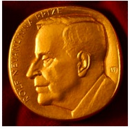

The IMU Abacus Medal, known before 2022 as the Rolf Nevanlinna Prize,[1] is awarded once every four years at the International Congress of Mathematicians, hosted by the International Mathematical Union (IMU), for outstanding contributions in mathematical aspects of information sciences including:
The prize was established in 1981 by the Executive Committee of the International Mathematical Union and named for the Finnish mathematician Rolf Nevanlinna. It consists of a gold medal and cash prize. The prize is targeted at young theoretical computer scientists, and only those younger than 40 on January 1, in the year the award is given away, are eligible.[2] It is awarded along with other IMU prizes, including the Fields Medal.[3] Former winners who have gone on to win the Turing Award include Robert Tarjan, Leslie Valiant, Avi Wigderson, and Peter Shor.
The prize was originally named to honour the Finnish mathematician Rolf Nevanlinna who had died a year before the prize's creation in 1981. The medal featured a profile of Nevanlinna, the text "Rolf Nevanlinna Prize", and very small characters "RH 83" on its obverse. RH refers to Raimo Heino, the medal's designer, and 83 to the year of first minting. On the reverse, two figures related to the University of Helsinki, the prize sponsor, are engraved. The rim bears the name of the prizewinner.[4]
Alexander Soifer, president of the World Federation of National Mathematics Competitions, complained about the prize's honouring of Nevanlinna, as he was a supporter of Hitler and had acted as a representative for the Finnish Volunteer Battalion of the Waffen-SS during World War II. Soifer discussed Nevanlinna's wartime activities in a 2015 book, and forwarded his personal and his organization’s requests to the Executive Committee of IMU to change the Prize's name.[5][6] In July 2018, the 18th General Assembly of the IMU decided to remove the name of Rolf Nevanlinna from the prize.[7] It was later announced that the prize would be named the IMU Abacus Medal.[1]
| Year | Laureate | Reasons |
|---|---|---|
| 1982 | Robert Tarjan | "Received the first Nevanlinna Prize for outstanding contributions to mathematical aspects of information science. "Pure mathematics enjoys the luxury of studying its constructions, whether finite or infinite, in complete independence of all questions of efficiency." explained Jacob Schwartz, who spoke on Tarjan's work. "By contrast, theoretical computer science must ultimately concern itself with computing engines which operate with limited speed and data storage, and therefore must take efficiency as one of its central concerns. Two closely related activities, algorithm design and algorithm analysis, grow out of this inevitable concern."[8] |
| 1986 | Leslie Valiant | "Valiant has contributed in a decisive way to the growth of almost every branch of the fast growing young tree of theoretical computer science, his theory of counting problems being perhaps his most important and mature work."[9] |
| 1990 | Alexander Razborov | "For his groundbreaking work on lower bounds for circuit complexity."[10] |
| 1994 | Avi Wigderson | "For his outstanding work on the mathematical foundations of computer science. The objects of research there include, for example, finding efficient methods for solving complex tasks as well as upper and lower bounds for the computational effort for certain problems. Wigderson made a significant contribution to understanding the paradoxical term "zero-knowledge interactive proofs".[11] |
| 1998 | Peter Shor | "For his outstanding work on quantum computation and in particular for deriving the Shor's algorithm." |
| 2002 | Madhu Sudan | "For important contributions to several areas of theoretical computer science, including probabilistically checkable proofs, non-approximability of optimization problems, and error-correcting codes." |
| 2006 | Jon Kleinberg | "For deep, creative and insightful contributions to the mathematical theory of the global information environment, including the influential "hubs and authorities"-algorithm; methods for discovering short chains in large social networks; techniques for modeling, identifying and analyzing bursts in data streams; theoretical models of community growth in social networks; and contributions to the mathematical theory of clustering." |
| 2010 | Daniel Spielman[12] | "For smoothed analysis of Linear Programming, algorithms for graph-based codes and applications of graph theory to Numerical Computing." |
| 2014 | Subhash Khot[13] | "For his prescient definition of the “Unique Games” problem, and leading the effort to understand its complexity and its pivotal role in the study of efficient approximation of optimization problems; his work has led to breakthroughs in algorithmic design and approximation hardness, and to new exciting interactions between computational complexity, analysis and geometry."[13] |
| 2018 | Constantinos Daskalakis[14] | "For transforming our understanding of the computational complexity of fundamental problems in markets, auctions, equilibria, and other economic structures. His work provides both efficient algorithms and limits on what can be performed efficiently in these domains."[14] |
| 2022 | Mark Braverman | "For his path-breaking research developing the theory of information complexity, a framework for using information theory to reason about communication protocols. His work has led to direct-sum theorems giving lower bounds on amortized communication, ingenious protocol compression methods, and new interactive communication protocols resilient to noise."[15] |
| 2026 | Shayan Oveis Gharan | "For his landmark contributions to the theory of algorithms, taking the analysis of algorithms beyond combinatorics and probabilistic analysis into the theory of the geometry of polynomials and related topics. His work has led to a deeper understanding of distributions on spanning trees and matroid bases in general and to a revolution in the understanding of Markov Chain Monte Carlo sampling algorithms."[16] |
{kind=link}